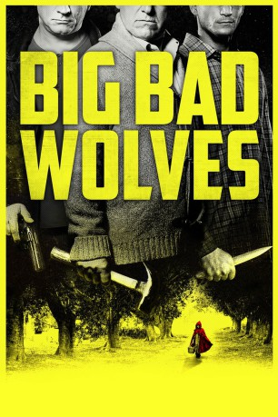

#2919 Big Bad Wolves
 gesehen am 04.01.2016
gesehen am 04.01.2016
 
 IMDB-Wertung: 6.8 / 10
IMDB-Wertung: 6.8 / 10  Metascore: 64
Metascore: 64 
Ein junges Schulmädchen ist brutal missbraucht und ermordet worden. Der Tat höchst verdächtig ist der Lehrer Dror, der das Mädchen unterrichtete und schon wegen ähnlicher Sachen aktenkundig ist. Polizist Micki möchte das Verfahren abkürzen und foltert den Verdächtigen, dabei wird er gefilmt und verliert seinen Job. Micki aber lässt nicht locker und beschattet den Verdächtigen weiter. Das bringt ihn über kurz oder lang auf Konfrontationskurs mit dem Vater des Opfers, der in der Angelegenheit ganz eigene Pläne verfolgt.
Jahr: 2013
Dauer: 109 Minuten
FSK: 18
Land: Israel Studio: Constantin FilmTonspuren:
Untertitel:
Auflösung: 1080p (1920x800) Größe: 3840 MB
Genre: Thriller, Krimi
Regisseur: Aharon Keshales, Navot Papushado
Drehbuch: Aharon Keshales, Navot Papushado
Soundtrack: Haim Frank Ilfman
Darsteller:
- Tzahi Grad als Gidi
 Lior Ashkenazi als Micki
Lior Ashkenazi als Micki- Rotem Keinan als Dror
- Ami Weinberg als Principal Meir
- Guy Adler als Eli
- Doval'e Glickman als Yoram
- Menashe Noy als Rami
- Dvir Benedek als Tsvika
- Nati Kluger als Eti
- Kais Nashif als Stranger on a Horse
- Arthur Perry als Ofer
- Gur Bentwich als Shauli
- Yuval Nadborany als Arik
- Alisa Vaisburd als School Girl
- Guy Shefa Pesso als School Boy
- Bar Minali als Sheni
- Alex Silberg als Kid Playing Hide and Seek
- Yuval Saragusi als Kid Playing Hide and Seek
- Itai Shcherback als Kid Playing Hide and Seek
- Ariel Kruszyn als Cellphone Boy
- Rivka Michaeli als Malka
- Sarah Adler als Dror's wife
- Valentina Tasiol als Ballet Dancer
- Yasmin Kolodny als Ballet Dancer
- Atara Rubinson als Ballet Dancer
- Roni Shalit als Ballet Dancer
- Coral Weinberg als Ballet Dancer
- Tal Ziering als Ballet Dancer
- Shirli Caspi als Ballet Dancer
- Roni Terliuc als Ballet Dancer
- Renana Shtraus als Ballet Dancer
- Elisheva Shetien als Ballet Dancer
- Hana Leon als Elderly Woman
- Oran Nagar als School Child
- Ytzhak Kokav als School Child
- Gil Almog als School Child
- Hen Baharlia als School Child
- Nissan Melik als School Child
- Sol Bat-Ain als School Child
- Tal Gertizovski als School Child
- Oded Amit als School Child
- Zohar Maksimov als School Child
- Sara Simon als School Child
- Racheli Dolev als School Child
- Daniel Stoklov als School Child
- David Komidi als Policeman
- Tzachi Weinsaft als Policeman
- Boaz Zaffrir als Policeman
- Dudu Tal als Policeman
Datei: X:\FSK18-2013\Big Bad Wolves (2013, FSK18, 1920x800).mkv seit 31.12.2015
Festplatte: FSK18
 Es gibt insgesamt 26 Filme in der Gruppe 'FSK18-2013'
Es gibt insgesamt 26 Filme in der Gruppe 'FSK18-2013'